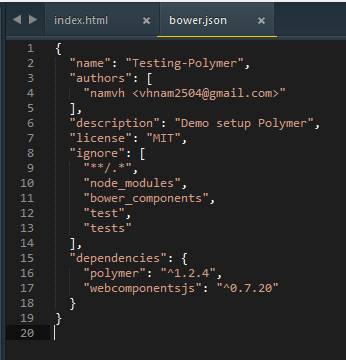
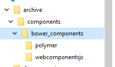
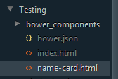

Cái tên Polymer dường như còn mới với chúng ta, hôm nay, mình xin làm một bài hướng dẫn sơ về nó. Số là hồi đó có làm qua nó nhưng lúc còn version 0.5. Đùng một cái, nó cập nhật lên 1.0. Trong khi project chưa có xong. Vài bữa trước có làm lại, thấy cách cấu hình như nó đã thay đổi nên viết vậy thôi.
Polymer là một thư viện được thiết kế theo phong cách Web Components, được phát triển bởi Google. Chủ yếu, thư viện này dùng để thể hiện ngôn ngữ thiết kế Material Design của Google.

Đôi khi, Polymer làm mình cũng hơi bối rối. Về cơ bản, AngularJS đã có khái niệm Directive để tạo Web Components và đã ra một phiên bản Angular thiên về Material Design. Nhưng vẫn duy trì song song 2 thư viện này? Nếu có thời gian mình sẽ tìm hiểu, hoặc nếu ai đã tìm hiểu thì cho mình biết nhé.
Đầu tiên, ta gõ lệnh bower init như hình.
Sau đó, ta cài Polymer và WebComponentsJS.

Kết quả, ta chỉnh sửa chút xíu sẽ được file bower.json như hình.
Cách này thì phía Polymer không khuyến khích. Nên cài bằng Bower nếu có thể được. Bạn vào đây để tải về. Link: https://www.polymer-project.org/1.0/docs/start/getting-the-code.html#using-zip
Sau khi tải về và giải nén, bạn copy thư mục bower_components vào nơi bạn cần tạo project.
Bây giờ, ta tạo một file mới tên là name-card.html cùng thư mục project của chúng ta.
Tiếp theo ta sẽ code lần lượt như sau.
Như vậy, ta đã xong bài "Hello World" của Polymer rồi. Nhưng đó chỉ là sử dụng các components cho bạn tự định nghĩa. Còn sử dụng component của Polymer thì làm sao? Sử dụng của nó thì hơi phức tạp tí. Đó là bạn cần dùng đứa nào thì tải component của đứa đó về. Chẳng hạn mình làm demo của paper-card. Đầu tiên, bạn phải tải component cần thiết về.
bower install --save PolymerElements/paper-card
bower install --save PolymerElements/paper-button
Phần chuẩn bị cho project có sử dụng Polymer đến đây xin tạm dừng. Ở phần sau, mình sẽ chỉ cho các bạn một điểm đáng lưu ý của Polymer.